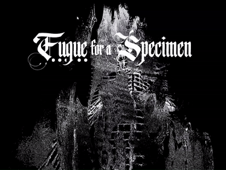
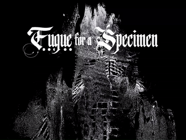
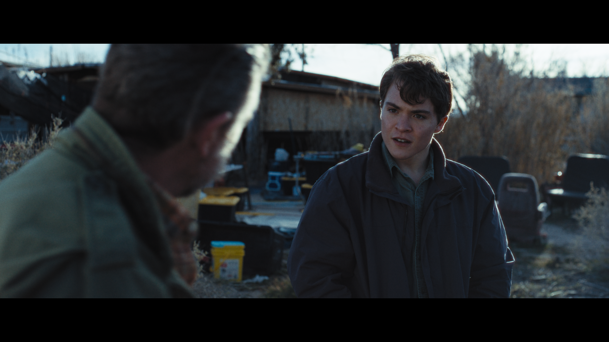
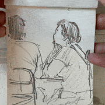
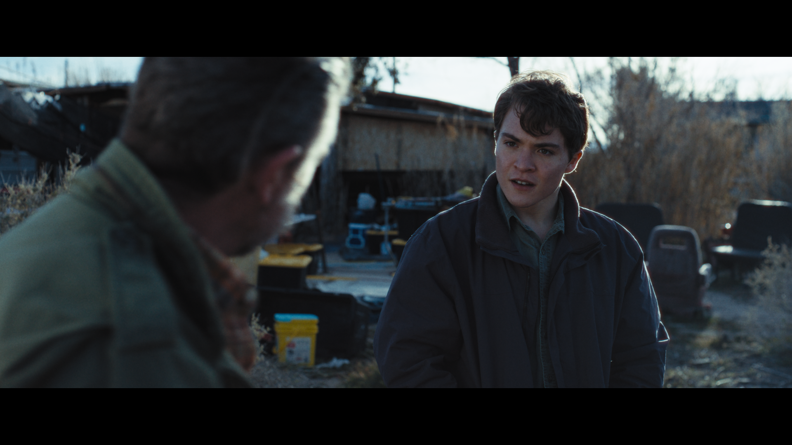
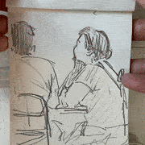

I am Emi Savage. I am a media artist and undergrad student based in
Los Angeles, CA. By blending emerging technology and sensory experience, I make work that draws you in to the body, the web, and
the things in your backyard. My disciplines include creative code, projection, installation, graphic design, and video.
I am currently attending the Media Arts + Practice
program at the University of Southern California. In
my free time, I like to collect CDs and feel the sun on my back.
This portfolio site is open source and
handcoded with p5.js and jQuery.

 


 


